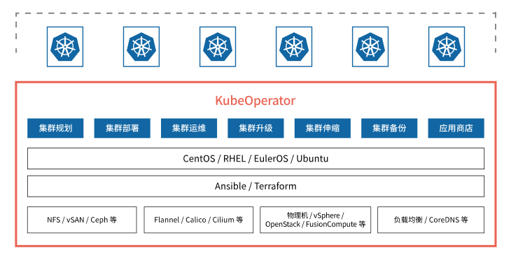
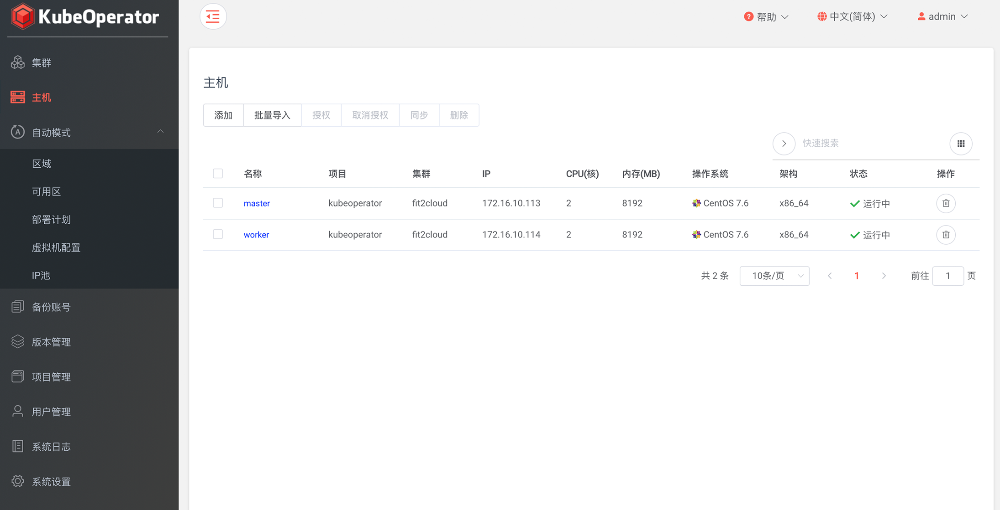
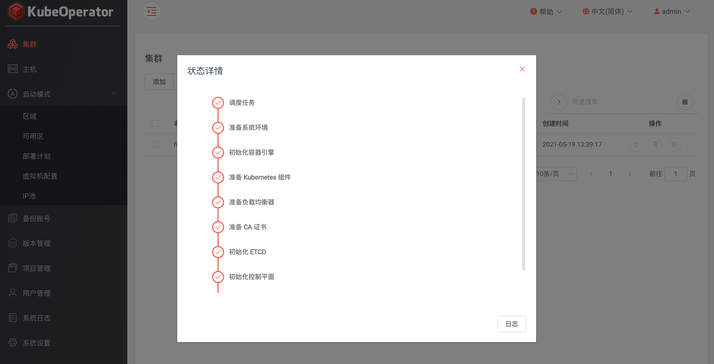
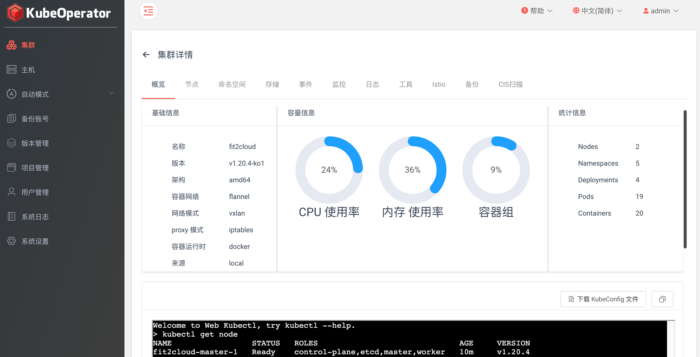
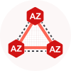

企业在 Kubernetes 集群规划、部署和运营中所面临的问题?
Day 0 规划阶段的问题
- 开发测试使用，还是生产使用？
- 部署在物理机上，还是 IaaS 上？
- 用哪种网络方案，服务如何暴露？
- 用哪种持久化存储？
- 用哪种操作系统？
Day 1 部署阶段的问题
- 如何快速创建主机资源？
- 如何实现自动化一键部署？
- 怎么进行离线部署？
- 快速部署常见应用并确保兼容性？
- 是否可视化页面，部署门槛？
Day 2 运营阶段的问题
- 集群如何无缝升级？
- 集群如何快速扩容？
- 监控、告警、日志是否完善？
- 如何进行快速安全加固？
- 集群如何进行备份和恢复？
开源的轻量级 Kubernetes 发行版
KubeOperator 是一个开源的轻量级 Kubernetes 发行版，专注于帮助企业规划、部署和运营生产级别的 Kubernetes 集群。
整体架构
- 支持多种计算、存储和网络方案
- 集成 Ansible 和 Terraform
- 支持在线环境和离线环境部署
- 提供可视化 Web UI
- 支持集群规划、部署和运营

Day 0 规划
- 计算：支持物理机、OpenStack 和 VMware 等
- 网络：支持 Flannel、Calico 等
- 存储：支持 Ceph、NFS、vSAN 等
- OS：支持 RHEL、CentOS、EulerOS 等
- 模式：支持单主和多主高可用集群
- 运行时：支持 Docker、Containerd
- CPU：支持 x86、Arm64 架构

Day 1 部署
- 提供离线环境下的完整安装包
- 支持可视化方式展示部署过程
- 支持一键自动化部署（使用 Ansible）

Day 2 运营
- 支持以项目为核心的分级授权管理
- 提供 Web Kubectl 界面
- 内置 Promethus、EFK、Grafana
- 支持集群升级、伸缩、备份
- 支持集群安全扫描

KubeOperator 的优势
与 OpenShift 等重量级 PaaS 平台相比，KubeOperator 只专注于解决一个问题，就是帮助企业规划（Day 0）、部署（Day 1）、运营（Day 2）生产级别的 K8s 集群，并且做到极致。
简单易用
通过 Web UI 来管理 K8s 集群
离线支持
离线环境下 K8s 集群的部署与升级
按需创建
一键创建和部署 K8s 集群
按需伸缩
快速伸缩集群节点，提升资源使用率
按需修补
快速升级 K8s 集群，确保安全

Multi-AZ 支持
Master 节点分布在不同的故障域